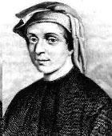

| Difference Equations Index | History Topics Index |
Riccati is the first mathematician that I will talk about from this period. His extensive series of mathematical publications brought Ricatti contemporary fame. His work dealt chiefly with analysis and, in particular, with differential equations. He achieved notable results in lowering the order of equations and in the separation of variables. His name is associated with a difference equation of the form
xn+1 = (a+b xn)/(c + d xn),
known as Riccati difference equation. For an extensive study of the theory of this equation click here.
His work in hydraulics was useful to the city of Venice and he helped construct dikes along the canals. In the study of differential equations his methods of lowering the order of an equation and separating variables were important. He considered many general classes of differential equations and found methods of solution which were widely adopted.
He is chiefly known for the Ricatti differential equation of which he made elaborate study and gave solutions for certain special cases. The equation had already been studied by Jacob Bernoullis , and was discussed by Riccati in a paper of 1724.
He corresponded with a large number of mathematicians
throughout Europe and had a wide influence on Daniel
Bernoullis , Euler.
He also worked on cycloidal
pendulums, the laws of resistance in a fluid and differential
geometry.
==============================================================================================================
Roger Cotes was another significant mathematician from this particular period. He had a few contributions that were substantial to the early seventeenth century. Cotes discovered an important theorem on the nth roots of unity, anticipated the method of least squares and discovered a method of integrating rational fractions with binomial denominators. His substantial advances in the theory of logarithms, the integral calculus, in numerical methods particularly interpolation and table construction led Newton to say "if he had lived we might have known something". He was entrusted with the preparation of the second edition of Newton's Principia. He worked out in detail Newton's idea of numerical integration and published the coefficients, now known as Cotes Numbers.
The Newton-Cotes formulae is a weighted quadrature formula of the type:
To see further into the Newton-Cotes method click here.
==============================================================================================================
Roberts Simson had many contributions to mathematical world, but he widely recognized for his work on Euclid's porisms. His work on Euclid's porisms was published in 1723 in the Philosophical Transactions of the Royal Society, and his restoration of the Loci Plani of Apollonius appeared in 1749. Further work of his on porisms and other subjects including logarithms was published posthumously in 1776 by Lord Stanhope at his own expense. Simson also set himself the task of preparing an edition of Euclid's Elements in as perfect a form as possible, and his edition of Euclid's books 1-6, 11 and 12 was for many years the standard text and formed the basis of textbooks on geometry written by other authors. The work ran through more than 70 different editions, revisions or translations published first in Glasgow in 1756, with others appearing in Glasgow, Edinburgh, Dublin, London, Cambridge, Paris and a number of other European and American cities. Recent editions appeared in London and Toronto in 1933 under the editorship of Isaac Todhunter, and in Sao Paolo in 1944. Simson's lectures were delivered in Latin, at any rate at the beginning of his career. His most important writings were written in that language, however, his edition of Euclid, after its first publication in Latin, appeared in English, as did a treatise on conic sections that he wrote for the benefit of his students.
His reputation as a geometer has always been very high, although, as a critic wrote:
the additions and alterations which Simson
made by way of restoring the text to its 'original accuracy' are certainly
not all of them
improvements, and the notes he appended
show with what reverence he regarded the great geometers of antiquity.
There was a feeling in some quarters that, by limiting his efforts to
the attainment of he perfect text, he lost an opportunity of applying his
own considerable talents
and insight to a more useful exposition of his subject. For Simson
the best vehicle for presenting a mathematical argument was geometry and,
although he was familiar
with the recent developments in algebra and the infinitesimal calculus,
he preferred to express himself in geometrical terms wherever possible.
He was not, of course,
alone in this, as Newton had adopted the same viewpoint when writing
his Principia.
That Simson's work was not restricted to Greek geometry is illustrated
by Tweddle's paper [3]., in which he discusses an early manuscript of Simson
dealing with
inverse tangent series and their use in calculating pi.
Simson also made many discoveries of his own in geometry and the Simson
line is named after him. However the Simson line does not appear in his
work but
Poncelet in Propriétés Projectives says that the theorem
was attributed to Simson by Servois in the Gergonne's Journal. It appears
that the theorem is due to
William Wallace.
The University of St Andrews awarded Simson an honorary Doctorate of Medicine in 1746.
In 1753 Simson noted that, as the Fibonacci numbers increased in magnitude,
the ratio between adjacent numbers approached the golden ratio, whose value
is
(1 + 5)/2 = 1.6180 . . . .
If you would like to see more of the the golden ratio, and the Fibonacci
sequence, click here. 
Article by: Eric Anderson